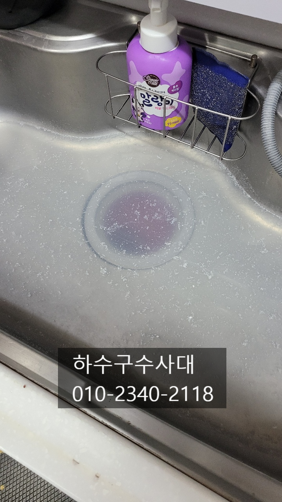
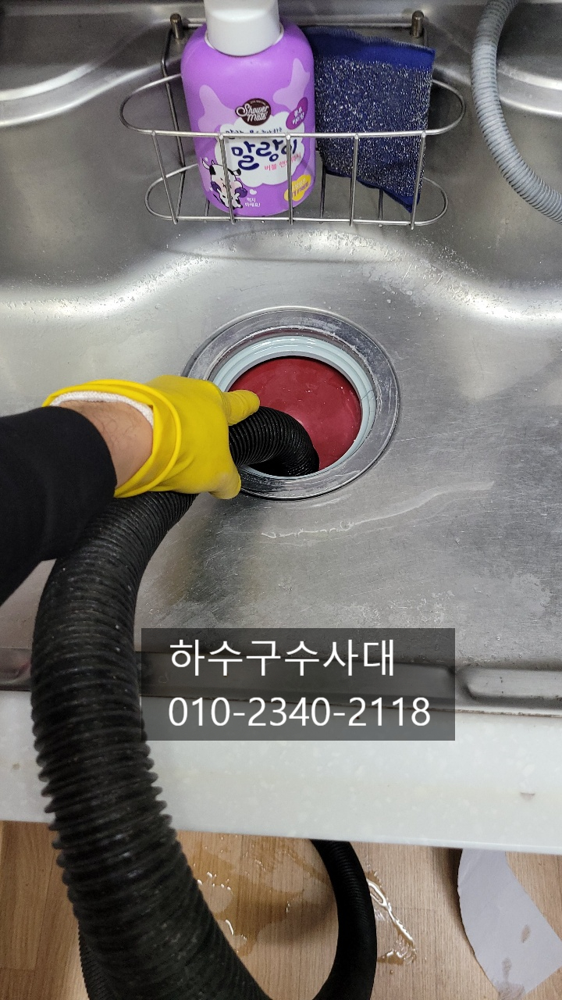
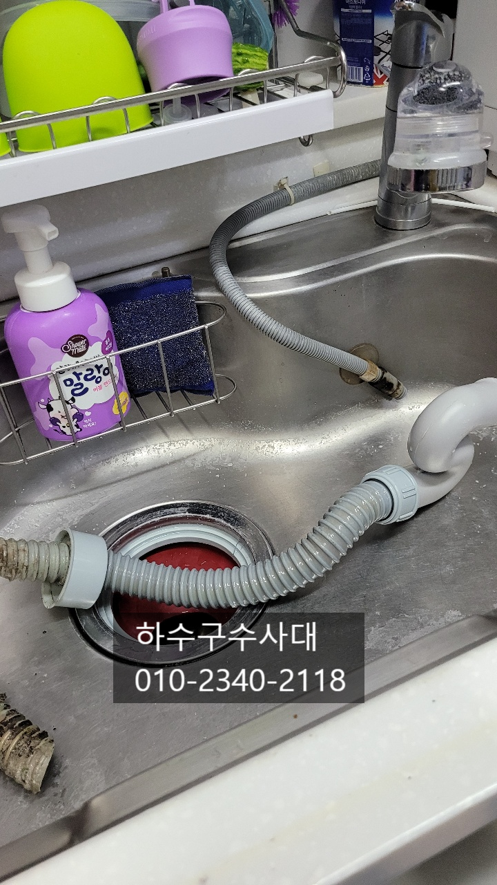
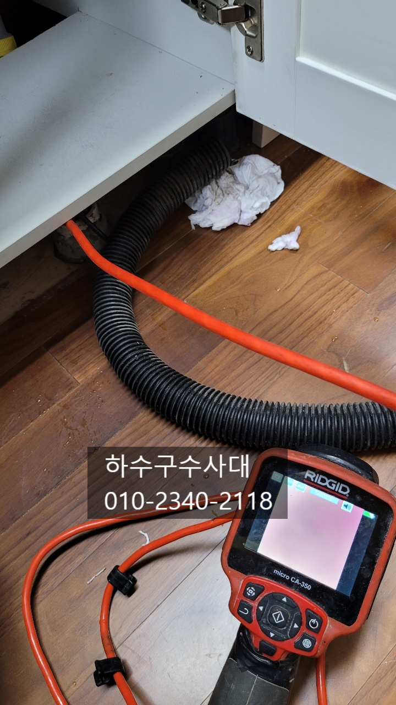
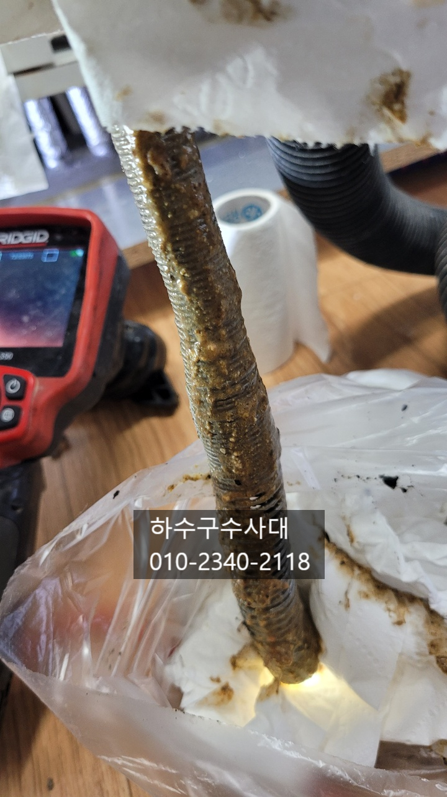
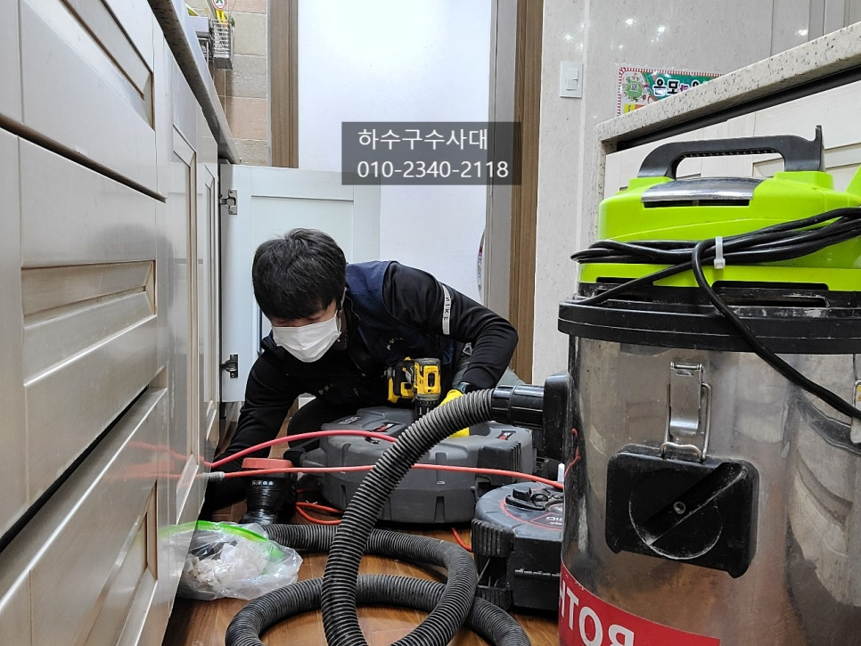
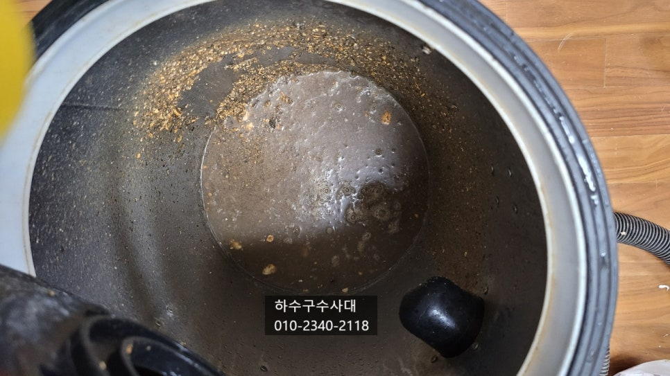

🏠 권선구싱크대막힘 권선구설비업체 싱크대하수구막힘
용인 싱크대막힘 전문 시공 후기

📋 작업 개요
- 위치: 용인
- 서비스 유형: 싱크대막힘, 하수구막힘, 배관막힘, 누수수리, 역류해결, 뚫는업체, 배관청소
- 작업 일시: 2021. 12. 1. 0:03
- 업체명: 하수구수사대 (010-5615-2118)
🔍 문제 상황
권선구싱크대막힘 권선구설비업체 싱크대하수구막힘
싱크대막힘으로 고객님의 연락을받고
"하수구수사대"가 바로 출동하였어요.
싱크대하수구배관은 음식물을 주로
흘려내리다 보니 기름성분이 지나갈수
밖에 없는데요 배관이 길거나 구배가 좋지않으면
기름이 미쳐나가지 못하고 배관에 쌓일수 있어요.
오늘 방문한 고객님집에는 음식물처리기도 사용하고
막히기 하루전에 곱창을 구워먹고 기름을 바로 버리셨답니다.
아무래도 배관에 기름기가 굳어있을거라 판단하고
위에부터 차근차근 청소를 하기로 합니다.
요즘 음식물처리기를 사용하는 세대가 많아지고
있는데요 아무래도 음식물처리기는 음식을 갈아서
하수구로 배출하다보면 배관에 죽처럼 나가게 되는데
이게 메인배관으로 들어가 머무르고 쌓이게되면
막힘현상이 빠르게 나타날수 있습니다.
하수구수사대

🔎 원인 분석
💡 전문가 진단: 하수구수사대010-2340-2118
010-2340-2118
배관내부를 살펴보기위해 내시경카메라를 투입시켰는데
음식물이 가득차있어 보이지도 않습니다.
카메라에 음식물이 죽처럼 묻어나왔는데요
상태가 매우 심각한 상태였어요.
고객님께서도 10년정도 살면서 가끔 막힘증상이
생기면 펑크린같은세정액을 넣어주는것
빼고는 따로 관리를 하지 않으셨답니다.
요즘 2~3년된 아파트가 막히는 증상이
나타나는데요 구조적으로 배관이 길고
여러번 꺽이는 구간이 많으면 2~3년 만에도
막히는 아파트들이 나타나고 있습니다.
간혹 하수구가 막혀 배관에서 역류하기도 하는데요
아파트는 싱크대하수구와 보일러분배기가 같은위치해
있어 싱크대하수구에서 물이 역류하면 분배기쪽이나
벽쪽으로 스며들어 밑에집에 누수가 되기도 하니
조심하셔야해요. 물이 갑자기 천천히 빠지는걸 보신다면

🔧 작업 과정
한번쯤은 꼭 점검받아보시길 추천드립니다.
하수구를 뚫는 장비는 여러가지가 있는데요
일반적인 뚫는용도로 쓰이는 스프링정도를
많이들 알고 계신데요 스프링은 말그대로
뚫어주는 장비로 배관을 깨끗하게 만들지는
못합니다. 싱크대하수구는 음식물이
주로 지나가기 때문에 배관이 동맥경화처럼
구멍이 작기때문에 되도록 깨끗하게 청소를
해주는것을 추천드려요.
기름을 제거하기 최적화 되어있는 장비로는
플렉스샤프트가 있는데요 체인이 회전하면서
배관에 붙어있는 기름들을 모두 떨어뜨려 물로
씻겨 나가게 하면 깨끗하게 청소가 됩니다.
물론 내시경카메라가 필수적으로 사용이 됩니다^^
하수구에 기름슬러지가 쌓이게되면
심한악취를 동반하기도 하는데요
싱크대밑에 하부장을 열게되면 심한악취가
나는경우가 있는데 이는 대부분 기름슬러지가
원인이라고 보시면 됩니다.
배관과 싱크대호스에 기름슬러지가 썩어나는 냄새로
싱크대호스도 교체해주는것이 좋아요.
깨끗히 청소가되고나면 앞으로 관리가 중요한데요
기름을 휴지로 닦아내고 설거지를 하면서 물을 충분히
내려주고 한달에 한번씩 펑크린같은 세정제를 넣어주시는걸
추천드려요. 물을 받아서 한번에 내려주는것도
좋은 방법이랍니다^^
물을 받아서 한번에 내려주게 되면 배관에
이물질이 쓸려나가게 됩니다.


✅ 작업 완료
고객님과 물을 받아서 내려보고 물이
새지는 않는지 꼼꼼하게 확인을 하고
뒷마무리를 하고 작업을 마쳤습니다^^
"하수구수사대" 는 1년 as를 보장해드리며
최신장비로 원인파악과 학실한 해결을
원칙으로 하고있습니다.
하수구문제로 고민중이시라면 언제든지 연락주세요^^




⚠️ 베란다 누수 및 방수 관리 방법
- ✅ 비가 많이 올 때 창틀 주변이나 아래층 천장에 얼룩이 생기는지 정기적으로 확인해 보세요.
- ✅ 우수관 주변 실리콘 마감이 들뜨거나 깨진 틈새가 있는지 손상 여부를 수시로 체크하세요.
- ✅ 베란다 바닥 타일의 줄눈(메지)이 소실되면 그 틈으로 물이 침투하여 누수가 유발됩니다.
- ✅ 누수 의심 증상 발견 시 방치하면 아래층 손실이 커지므로 즉시 전문가의 진단을 받으십시오.
💡 핵심 정리
- 확실한 장비 작업(내시경 점검 및 샤프트 스케일링)으로 원인을 뿌리 뽑습니다.
- 작업 후 1년 이내에 동일한 부위 재발 시 100% 무상 A/S 서비스를 보장합니다.
- 서울 · 경기 · 인천 전 지역에 24시간 언제든 긴급 출동할 수 있도록 항시 대기 중입니다.
❓ 자주 묻는 질문 (FAQ)
🚨 용인 싱크대막힘 문제로 고민이신가요?
정확한 원인 진단과 확실한 시공으로 재발 없는 해결을 약속드립니다.
24시간 긴급 출동 | 서울 · 경기 · 인천 전지역 | 1년 내 재발 시 무상 A/S